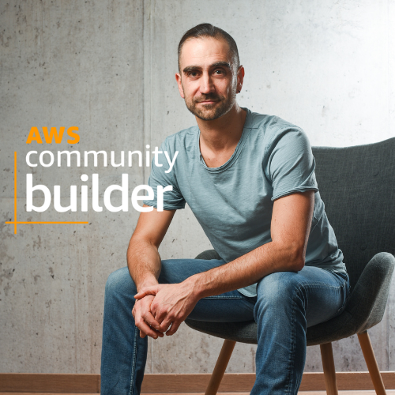
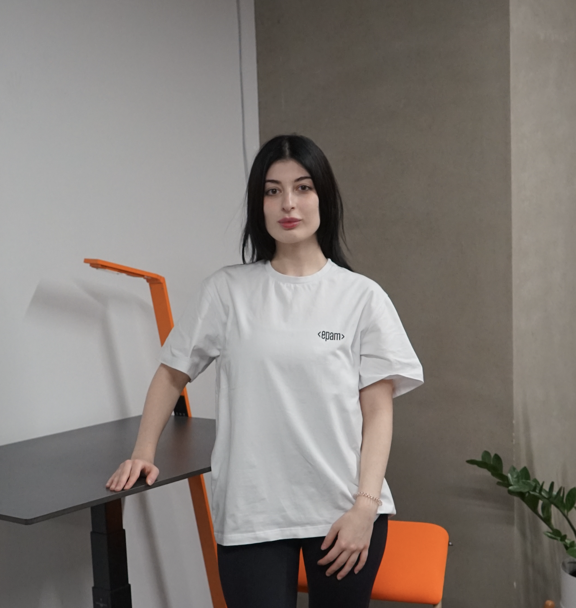
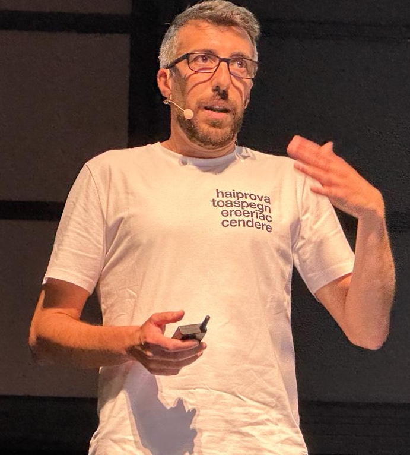

Talks
AWS is an incredible feat: goodness knows how many servers working together across the world, ready to do your bidding in a million different ways at a moments notice. It's almost certainly indirectly ommipresent in your life, even if you've never logged into the AWS console. That doesn’t mean it can’t be fun. This talk is about my adventures in (ab)using AWS to automate random stuff with serverless services (they’re almost free for low use after all). I'll talk about weird projects I've made, before going on to discuss practicalities like cost, planning and infrastructure management. It’ll all be quite good fun, and a bit of light relief from more technical talks. Hopefully, you’ll be left inspired to make your own cloudy Rube Goldburg machines, and generally have fun learning AWS.
Anna Aitchison

Data platforms are notorious for needing infrastructure that needs to run 24x7x365. We took on a challenge to implement a self service Data Lake platform using only Serverless cloud services.
This session will present a story of the endeavour from business requirements, design to implementation in an enterprise setup, and it will cover: when to platform data lakes aka centralise vs decentralise, how to ensure the data lakes remains usable, how to enhance developer experience via self service mechanisms, and when should you use a data lake over other data products like data warehouse.
Anurag Kale

In serverless computing, speed is paramount, not just for optimizing development time, but crucially for the relationship between performance and operational costs. In our hyperconnected world, where rapid information access is essential, those who can leverage this concept at scale will benefit from reduced cloud costs. Rust is emerging as a key language for unlocking the performance of next-generation serverless applications. Recently, JavaScript engines like Deno and Bun have sought to improve performance using low-level languages such as Rust and Zig. However, these often include APIs and code superfluous in serverless environments. We introduce LLRT, a low-latency runtime specifically designed to maximize AWS Lambda performance for JavaScript developers. Optimized for serverless environments, LLRT eliminates unnecessary components, offering ultra-fast information access and significant cloud cost reductions.
Daniele Frasca

Let's face it: "Nobody cares about your code, as long as it solves your customer's problem and is shipped on time."
That's why often corners are cut and prototypes are shipped directly to production. If you are lucky and your product gains traction, you might start hitting some bottlenecks and you have to pay back some tech debt.
Let's explore some DynamoDB querying and modeling tips (that we learned the hard way) that will help you keep your code clean and simple, improve performance, and even reduce your AWS bill.
Davide De Paolis
Se stai cercando una chiave per minimizzare le dipendenze tra i componenti della tua architettura Cloud-native e far scalare le tue applicazioni oggi è il tuo giorno fortunato.
In questa sessione esploreremo come utilizzare Amazon EventBridge per implementare un’architettura event-driven che utilizza regole di routing avanzate per gestire il flusso degli eventi da producer a consumer.
Eric Villa

In today's globalized world, applications require data to be accessible, scalable, and performant across geographical boundaries. This presentation explores the power of AWS Global Databases, a suite of services designed to empower businesses to manage their data at scale, regardless of location. We'll delve into the benefits of using AWS for global database solutions, including high availability, scalability, reduced latency and simplified management.
Irine Kokilashvili
Kenneth Attard
La gestione di workflow applicativi è un tema annoso e ampiamente dibattuto, tuttavia sempre attuale. Esistono svariati modi e tecnologie per affrontarlo ma a volte la soluzione custom può essere la via migliore. In questo intervento, all'interno di un contesto reale di migrazione in cloud e completo refactoring di un complesso sistema di gestione documentale, andremo a descrivere l'uso della combo Service Catalog + Step Functions per la governance di un motore workflow customizzato. In particolare andremo a evidenziare l'uso non consueto che ne è stato fatto e la grande potenza e flessibilità che ci ha fornito, permettendoci di soddisfare dei requisiti come: architettura a microservizi completamente disaccoppiata e con scaling altamente configurabile, sviluppo di innumerevoli task del workflow fatta da team senza competenze cloud, completa automazione delle procedure di build/deploy/undeploy/healthcheck/rollback, possibilità di mantenete e ripristinare facilmente precedenti versioni dei task di workflow, svincolo da particolari strumenti o linguaggi.
Luca Fiscato
Manuel Vianello
Using multiple AWS accounts is a best practice that can help you isolate and manage business applications and data. If you have looked at the AWS Well-Architected Framework you might have seen that having multiple accounts for an organisation can help achieve operational excellence, security, reliability, and even cost optimisation. Starting with a good multi-account foundation is something that will enforce many best practices from day 0, like, for example, not having long-lived credentials on developers’ machines. And the benefits just get greater as the company grows and the level of cloud adoption increases. It’s a practice that scales well from 1 developer to thousands of developers! In this talk, I will show you how to leverage services such as AWS IAM Identity Center, AWS Organizations, and tools such as Granted and OrgFormation to manage multiple accounts confidently and consistently.
Luciano Mammino
This step-by-step session will show you how to simplify the infrastructure setup, showcasing the interaction between developers and cloud environments through conversational interfaces. Learn to create, and deploy infrastructure effortlessly using chat commands. The session will highlight the integration of AWS services to build a ChatOps companion, offering practical insights into leveraging serverless architecture for efficient infrastructure and FinOps practices, enhancing team collaboration, and boosting productivity.
Matteo Depascale

In this presentation, we explore the critical question, "Is Serverless the new way to go, at any cost and every scale?" Reflecting on Sky Italia's shift to a serverless-first approach for our million-DAU digital properties, we aim to provide a comprehensive and candid look into this decision. We'll share insights into the tangible benefits we've achieved, the challenges and limitations we've faced, and the practical pitfalls and missteps encountered along the way. This talk is designed for professionals and enthusiasts alike, seeking an honest and detailed exploration of the serverless paradigm in high-traffic environments. Join us for an engaging session that goes beyond the hype, offering real-world lessons and strategies from Sky Italia's journey in the serverless landscape.
Nicola Cremaschini
In this presentation, we will delve into the architectural design of a unified data platform engineered to support a wide range of use cases, from analytics to advanced AI/ML-driven applications. As businesses rapidly evolve and new AI or ML models emerge regularly, it becomes essential to have a data foundation that is not only scalable but also exceptionally adaptable to integrate new use cases swiftly. We will explore how leveraging an Event-Driven Architecture, can create a scaleable, resilient and flexible architecture that meets these demands. Attendees will gain comprehensive insights into the architectural principles and practical implementation strategies necessary to build a data platform that is equipped to handle today’s analytics demands and tomorrow’s AI challenges.
Sepehr Mohammadi
Scaling AI applications can present unique challenges in terms of performance, cost, and infrastructure. This talk will focus on strategies for building scalable and cost-effective AI solutions on AWS, covering topics such as distributed training, model optimization, and cost optimization techniques. Attendees will gain insights into how to design AI architectures that can handle large workloads efficiently while keeping costs under control, enabling them to deploy AI at scale with confidence.
Serena Sensini
Questa presentazione si concentra sull'importanza della visibilità e della sicurezza nell'ambito del cloud computing. Discuteremo strategie per gestire efficacemente risorse, identità privilegiate e asset, garantendo al contempo la conformità a normative come GDPR e NIS2. Esploreremo metodi per ottenere una visibilità completa del flusso di lavoro cloud, includendo asset, carichi di lavoro e dati. Analizzeremo le misure di sicurezza applicabili a container, storage e funzioni serverless. L'obiettivo è fornire un approccio pragmatico ed efficace allo sviluppo di applicazioni cloud-native, bilanciando le esigenze di innovazione con i requisiti di sicurezza, per soddisfare sia gli sviluppatori... che il CISO!
Sunil Venanzini
Luca De Fassi
La nuova direttiva NIS2, che entra in vigore ad ottobre 2024, definisce come le aziende devono predisporre la sicurezza per le componenti OT sulle infrastrutture critiche del paese. In questa sessione presenteremo una reference architecture che risponde a queste nuove direttive, utilizzando i servizi di Industrial IoT di AWS e racconteremo l'esperienza di alcuni casi cliente su cui questo approccio ha avuto successo.
Woody Borraccino